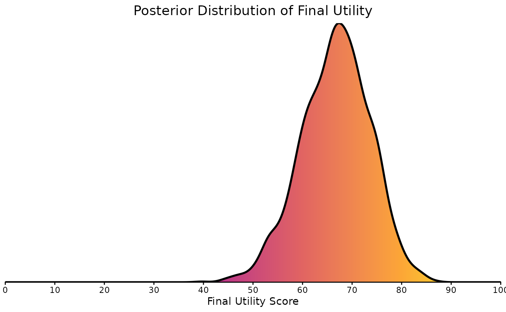

Plot Utility Score Density Distribution
Source:R/bayescores.R, R/plot_final_utility_density.R
plot_final_utility_density.RdCreates a smooth, filled density plot visualizing the posterior distribution of final utility scores.
This function uses the `bde` package for bounded density estimation, which is appropriate for scores that are constrained to a specific range (e.g., 0 to 100). The resulting plot is styled with a vertical color gradient fill. It also includes a crucial fix to prevent the density line from dropping below y=0, a common artifact in kernel density estimation near boundaries.
Creates a gradient-filled density plot to visualize the posterior distribution of final utility scores. This function uses a two-step process: first, it calculates the density from the data, and then it uses ggplot2 to create the visualization.
Usage
plot_final_utility_density(final_utility_results)
plot_final_utility_density(final_utility_results)Value
A `ggplot` object representing the density plot. This object can be further customized using standard `ggplot2` functions (e.g., adding more layers or modifying the theme).
A ggplot object representing the density plot.
Examples
# \dontrun{
# --- Create a sample data structure ---
# This simulates the expected input for the function.
# In a real case, this would come from another part of your analysis.
set.seed(42) # for reproducibility
sample_scores <- rbeta(2000, shape1 = 30, shape2 = 15) * 100
results <- list(final_utility_vector = sample_scores)
# --- Generate the plot ---
density_plot <- plot_final_utility_density(results)
# --- Display the plot ---
print(density_plot)

# }
if (FALSE) { # \dontrun{
# 1. Create a sample data structure
# (simulating 1000 scores from a Beta distribution scaled to 0-100)
sample_scores <- rbeta(1000, shape1 = 30, shape2 = 10) * 100
sample_results <- list(final_utility_vector = sample_scores)
# 2. Generate the plot
plot_final_utility_density(sample_results)
} # }